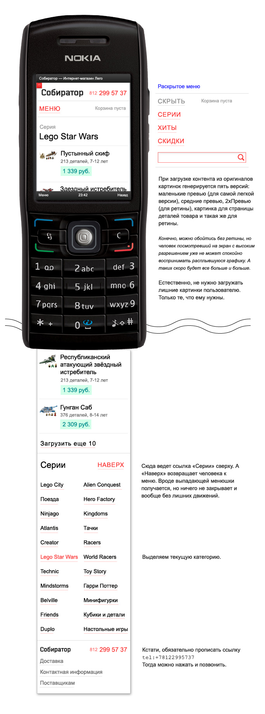
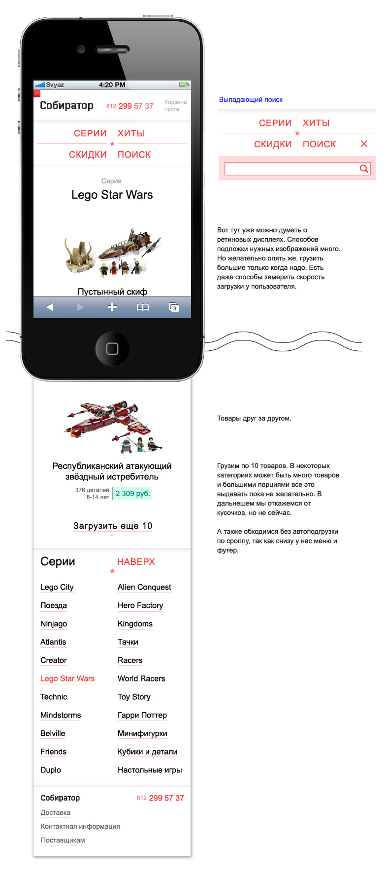
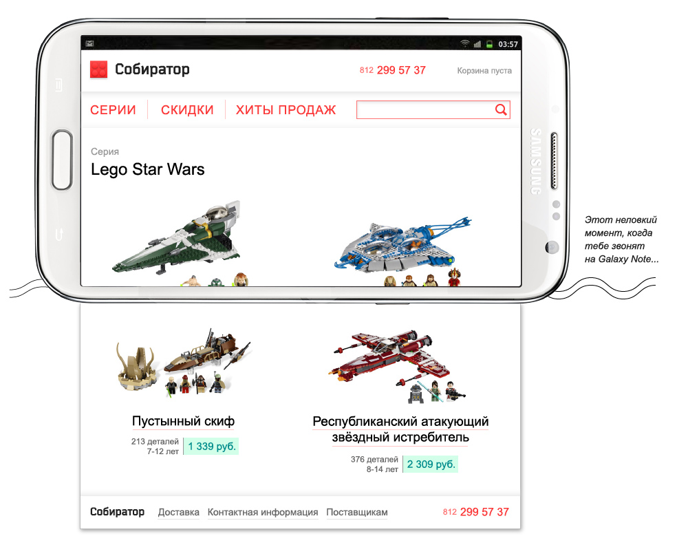
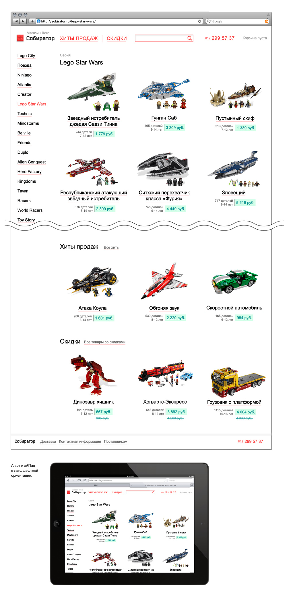
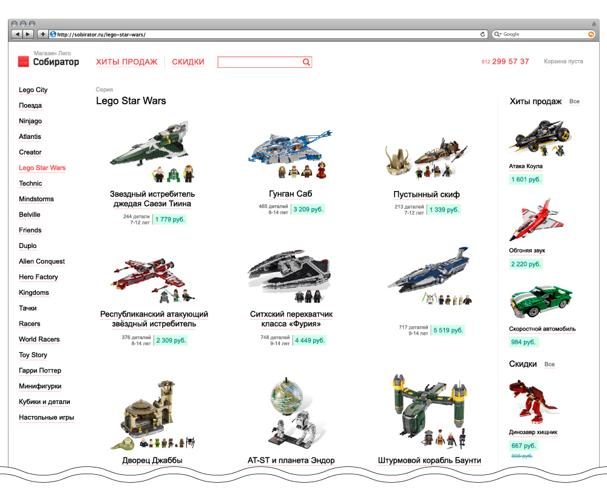

8-е задания конкурса Russian Design Cup 2012.
В ходе проектирования определены основые переходные точки: 240-319px, 320px, 640px, 768px, 1000px и 1200px.
240 — 319px
Самая легкая версия сайта. Под маленькие экраны и разрешения. А маленькие экраны и разрешения подразумевают часто и низкую скорость соединения.
Важно! Под эту, следующую (320–639) и под полную версию нужно использовать отдельные CSS файлы и загружать их по мере необходимости согласно соответствующим @media-запросам. Это нужно для оптимизации, чтобы мобильные пользователи не грузили лишнее. Каждая версия содержит минимум необходимый для текущей версии.
На всех макетах мы находимся на одном экране: Серия Lego Star Wars. Рекомендации (в нашем случае это хиты продаж и товары со скидками) пока не грузим сразу, а только даем ссылки на эти страницы.
320 — 639px
Стиль под среднестатистический современный смартфон. Изменения понятны. Увеличиваем размер шрифтов. Опять же резина. Товары и меню центрированы, в остальном все так же. С картинками не мельчим — это же Лего все-таки.
640 — 767px
Загружается третий css-файл. С 640 px пикселей товары выводятся в две колонки. Шапка просто растягивается. Выдвигается полноценный логотип! Меню одной строкой. Поиск сразу делаем полем. А нижние две колонки превращаем в четыре. Увеличиваем шрифты. Резина продолжается: тянем только промежутки.
Тут маленькие плашеты и некоторые смартфоны в ландшафтном режиме.
768 — 999px
Брейкпоинт в районе тысячи. Это наш iPad в портретном режиме (а без специального трюка и в ландшафтном, но верстальщик это учтет и в ландшафтном у нас будет следующий стиль). Тут мы можем убрать «Серии» из меню и вывести привычной колонкой слева. В остальном пока так же.

1000 — 1199px
Тут у нас среднестатистические пользователи десктопов и лэптопов + планшеты в ландшафтном режиме (включая айпад, если верстальщик позаботится об этом). Можно поспорить насчет начальной 1000px (широкий скрол, панель пуск в виндоусе вынесенная вбок и т.д.), но не будем — у нас есть версия для чуть меньшего разрешения и для того она делается. Пояснять тут больше нечего. Кстати, кнопку «В корзину», «Купить» и т.п. не ставлю к каждому товару в списке, потому что мусор ну и потому что Лего.
Резину можно с этого места не делать. В стилях для мобильных устройств резина нужна, чтобы максимально подстроиться под большое разнообразие разрешений. На десктопе это уже не так важно — большой выгоды от постоянного использования всего пространства окна не будет.
1200px и более
Последняя ступенька. Выводим рекомендации повыше в новую правую колонку. Больше сильных изменений нет. Немного разряжаем основные товары.
На этом разрешении мы фиксируемся и дальше ничего никуда не тянем.
